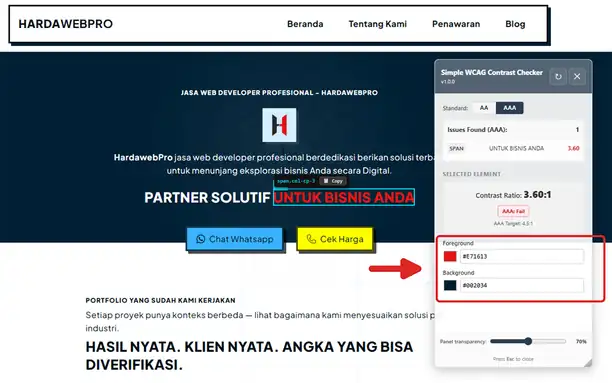
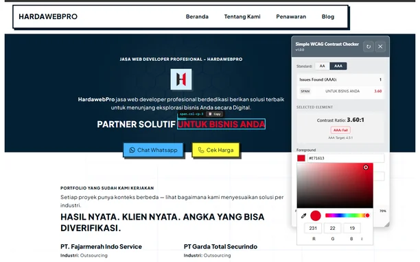
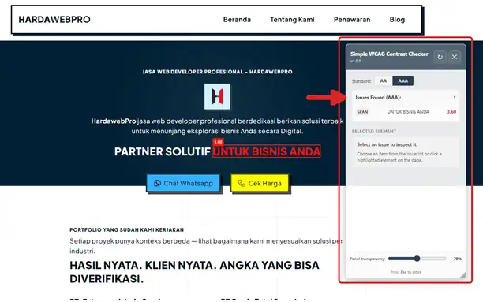
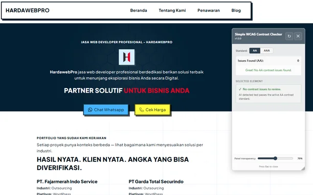
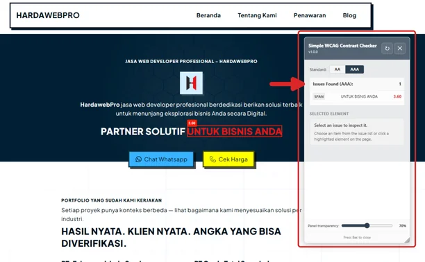
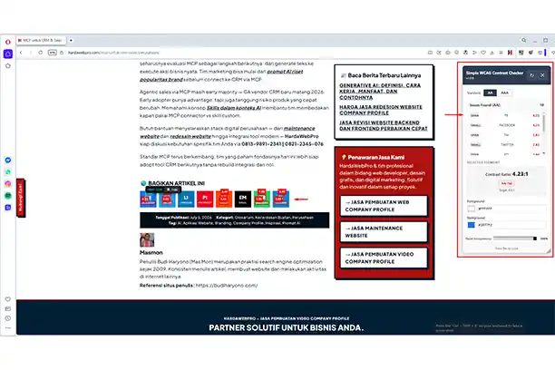

Extension ini paling sering dipakai web developer, khususnya frontend web developer. Mereka menguji kontras di halaman yang sudah ter-render, bukan hanya di mockup. Dengan begitu, perbaikan warna masuk ke CSS, token, atau komponen UI sebelum merge.
Bagi frontend web developer, Simple WCAG Contrast Checker mempercepat QA visual harian. Anda scan tombol, label form, link footer, dan state hover tanpa tool eksternal. Overlay rasio membuat diskusi dengan designer lebih objektif.
Oleh karena itu, frontend web developer yang menjaga aksesibilitas UI sebaiknya memasang extension ini di browser kerja. Jalankan scan AA di staging, catat elemen gagal, lalu perbaiki token warna. Alur singkat itu mengurangi revisi “teksnya susah dibaca” setelah go-live.
Teks abu di hero sering “aman” di Figma, lalu gagal di browser nyata. Oleh karena itu kami merilis extension cek color contrast bernama Simple WCAG Contrast Checker. Anda membuka halaman target, klik ikon, lalu lihat elemen yang gagal ambang WCAG.
Tool ini karya HardaWebPro (Budi Haryono). Versi 1.0.0 tersedia di Chrome, Edge, Opera, dan Firefox. Tidak ada login. Tidak ada kirim data ke server. Semua analisis berjalan lokal di browser Anda.
Prasyarat singkat: browser modern, akses store resmi, dan halaman http/https yang bisa Anda buka. Estimasi waktu: 5–10 menit untuk pasang plus scan pertama.
Highlight
Extension Untuk Cek Color Contrast by HardaWebPro- Simple WCAG Contrast Checker memindai teks terlihat, menghitung rasio, lalu menyorot elemen gagal dengan overlay merah.
- Toggle AA (4.5:1 / 3:1) dan AAA (7:1 / 4.5:1) tersedia di panel inspector.
- Fitur inti: full-page scan, live color edit, salin CSS selector, panel Shadow DOM.
- Instalasi resmi lewat Chrome Web Store, Edge Add-ons, Opera Add-ons, dan Firefox AMO.
- Privasi: tidak mengumpulkan data pribadi; preferensi tersimpan lokal di perangkat.
- Cocok untuk developer, designer, dan QA sebelum handoff atau rilis staging.
Fitur
- Toggle WCAG AA & AAA — ganti standar dengan satu klik
- Scan halaman penuh — mendeteksi semua elemen teks terlihat yang gagal standar kontras terpilih
- Highlight overlay merah — menandai setiap elemen gagal langsung di halaman beserta rasio kontrasnya
- Element inspector — klik elemen tersorot untuk melihat dan mengedit warna foreground serta background secara real time
- Rasio kontras live — memperbarui angka seketika saat Anda menyesuaikan warna
- Salin CSS selector — salin selector elemen gagal dengan satu klik untuk dipakai di stylesheet
- Panel bisa digeser & diubah ukuran — posisikan inspector di mana saja di layar
- Kontrol transparansi panel — atur opacity agar panel tidak menutupi tampilan
- Pengaturan persisten — mengingat posisi, ukuran, transparansi, dan standar terpilih antar sesi
- Isolasi Shadow DOM — panel extension tidak bentrok dengan gaya CSS halaman host
- Tekan Esc untuk menutup — ramah keyboard
Privasi
Simple WCAG Contrast Checker tidak mengumpulkan data pribadi apa pun.
Kebijakan privasi lengkap: https://hardawebpro.com/support/privacy-policy-simple-wcag-contrast-checker/
Author
- Nama: HardaWebPro
- URI: https://hardawebpro.com
Tech Stack
- Manifest V3 — platform Chrome Extensions versi terbaru
- Vanilla JavaScript — tanpa framework, tanpa dependensi
- Shadow DOM — isolasi panel dari gaya CSS halaman host
- Chrome Storage API — penyimpanan preferensi lokal
- Algoritma kontras WCAG 2.1 — luminansi relatif melalui linearisasi sRGB
Apa Itu Simple WCAG Contrast Checker
Simple WCAG Contrast Checker adalah extension cek color contrast di kategori developer tools. Ia memverifikasi kontras teks terhadap latar di halaman yang sedang terbuka.
Cara kerjanya langsung. Anda klik ikon extension. Panel inspector terbuka. Extension memindai elemen teks terlihat, menghitung contrast ratio, lalu menandai yang gagal standar terpilih.
Menurut kami, nilai utamanya bukan “kalkulator hex dua warna”. Melainkan peta masalah di halaman nyata: tombol CTA, label form, caption, dan teks di atas foto hero.
Batasan jujur: tool ini mengecek kontras warna saja. Ia tidak mengganti audit keyboard, screen reader, atau ARIA. Juga bukan sertifikasi resmi W3C.
Referensi ambang resmi ada di dokumentasi W3C Contrast (Minimum).
Persiapan Sebelum Memasang Extension Cek Color Contrast
Sebelum install, siapkan empat hal berikut agar langkah tidak macet di tengah jalan.
- Browser yang sesuai store: Chrome, Edge, Opera, atau Firefox.
- Akun store bila diminta konfirmasi instalasi (Chrome/Edge sering meminta).
- Halaman uji: staging, localhost, atau situs publik yang relevan.
- Target standar proyek: biasanya AA dulu, AAA bila brief meminta.
Bila Anda memakai kebijakan perusahaan yang memblokir store, minta IT mengizinkan listing resmi extension ini. Jangan pasang paket .crx dari sumber tidak dikenal.
Tips: buka dulu halaman dengan banyak teks kecil. Scan di halaman kosong membuat hasil terasa “semua aman” padahal komponen kritis belum terlihat.
Cara Pakai Panel Inspector Step by Step
Alur di empat browser hampir sama setelah ikon muncul di toolbar. Ikuti langkah bernomor di bawah.
- Buka halaman yang ingin Anda uji.
- Klik ikon Simple WCAG Contrast Checker di toolbar.
- Pilih standar AA atau AAA di panel.
- Biarkan scan berjalan pada teks terlihat.
- Perhatikan overlay merah dan label rasio pada elemen gagal.
- Klik elemen tersorot untuk membuka editor warna live.
- Sesuaikan foreground/background sampai rasio lulus.
- Salin CSS selector atau hex bila perlu perbaikan di kode.
- Tekan Esc atau klik tutup untuk menutup panel.
Jika berhasil, Anda melihat overlay merah hanya pada elemen gagal. Panel juga mengingat posisi, ukuran, opacity, dan standar terakhir. Jadi sesi QA berikutnya tidak mulai dari nol.
Live edit bersifat inspeksi di halaman aktif. Perubahan belum otomatis masuk file CSS proyek. Anda tetap menyalin nilai final ke stylesheet atau design token.
Fitur yang Sering Kami Pakai Saat QA
Full-page scan paling berguna di halaman panjang: pricing, blog, atau form multi-step. Satu klik menghemat hover elemen satu per satu.
Salin CSS selector memangkas tebak class di page builder WordPress. Shadow DOM isolation menjaga panel tidak “hancur” oleh CSS reset tema agresif.
Trade-off: konten di luar viewport, modal tertutup, atau tab nonaktif mungkin belum ikut scan. Buka state tersebut dulu, lalu scan ulang.
Pasang Extension Cek Color Contrast di Chrome Web Store



Chrome masih jadi browser kerja harian banyak front-end di Indonesia. Jadi listing Chrome sering jadi pintu masuk pertama.
- Nama di store: Simple WCAG Contrast Checker
- Provider: Google Chrome Web Store
- Repository / listing: Chrome Web Store — Simple WCAG Contrast Checker
- Buka listing Chrome di atas lewat Chrome desktop.
- Klik Add to Chrome, lalu konfirmasi izin.
- Pin ikon extension agar mudah diklik saat QA.
- Buka halaman uji dan jalankan scan AA.
Detail teknis listing: versi 1.0.0, ukuran sekitar 519KiB, bahasa antarmuka English (United States). Developer listing mencantumkan Budi Haryono / HardaWebPro.
Jika berhasil, ikon muncul di toolbar dan panel terbuka tanpa error. Bila tombol Add disabled, pastikan Anda memakai Chrome stabil, bukan mode guest yang membatasi extension.
Pasang di Microsoft Edge Add-ons


Banyak kantor mengunci browser ke Edge. Alur cek kontras tetap bisa sama tanpa memaksa tim pindah ke Chrome.
- Nama di store: Simple WCAG Contrast Checker
- Provider: Microsoft Edge Add-ons
- Repository / listing: Edge Add-ons — Simple WCAG Contrast Checker
- Buka listing Edge Add-ons di atas memakai Microsoft Edge.
- Klik tombol Get / Install, lalu izinkan instalasi.
- Buka halaman staging dan klik ikon extension.
- Toggle AA, scan, lalu catat elemen gagal ke ticket.
Karena Edge berbasis Chromium, fitur panel mirip Chrome: overlay gagal, live color edit, salin selector, dan preferensi tersimpan lokal.
Namun versi Edge enterprise kadang memblokir sideload. Pakai jalur store resmi agar kebijakan IT lebih mudah menyetujui.
Jika panel tidak muncul, cek Extensions di edge://extensions dan pastikan extension aktif. Restart Edge bila ikon belum ter-render setelah install.
Pasang di Opera Add-ons

Opera kurang dominan di korporate. Akan tetapi sebagian freelancer dan power user tetap memakainya sehari-hari.
- Nama di store: Simple WCAG Contrast Checker
- Provider: Opera Add-ons
- Repository / listing: Opera Add-ons — Simple WCAG Contrast Checker
- Buka listing Opera Add-ons lewat browser Opera.
- Pasang extension dari halaman detail resmi.
- Izinkan akses data situs bila dialog permission muncul.
- Uji scan pada halaman yang sama dengan checklist Chrome/Edge.
Deskripsi store Opera menekankan panel mengambang, overlay merah berisi rasio, editor warna live, serta toggle AA/AAA. Panel bisa digeser, diubah ukuran, dan punya slider opacity.
Permission tipikal: akses data di semua situs (untuk scan DOM) dan tulis ke clipboard (untuk salin selector/hex). Analisis tetap lokal.
Bila Anda QA lintas browser Chromium, samakan checklist: tombol paket, badge promo, label harga, dan teks kecil footer.
Pasang di Firefox Add-ons (AMO)
Firefox punya ekosistem add-on sendiri. Listing AMO berguna bila tim QA memakai Firefox sebagai browser sekunder atau utama.
-
Nama di store: Simple WCAG Contrast Checker
- Buka listing Firefox AMO di atas memakai Firefox.
- Klik Add to Firefox, lalu konfirmasi permission.
- Buka halaman
httpatauhttpsyang didukung. - Jalankan scan, klik item summary untuk inspeksi warna.
- Rescan setelah DOM berubah (navigasi, tab konten, modal).
- Ikon ada, panel kosong: refresh halaman, pastikan skema URL didukung.
- Tidak ada overlay: mungkin semua teks lulus, atau teks tersembunyi di state lain.
- Rasio beda dari Figma: browser memakai warna computed + opacity nyata.
- Clipboard gagal: izinkan permission clipboard di pengaturan extension.
- Panel “aneh” di tema custom: pastikan build terbaru; Shadow DOM sudah mengisolasi UI.
Provider: Firefox Browser Add-ons (AMO)
Repository / listing: Firefox AMO — Simple WCAG Contrast Checker
Profil publisher HardaWebPro di AMO: addons.mozilla.org/user/20026700.
Di Firefox, deskripsi listing menekankan summary issues, click-to-inspect, custom color picker, salin selector, serta salin hex foreground/background. Versi 1.0.0 berukuran sekitar 59.65 KB.
Developer menyatakan tidak ada pengumpulan data. Permission mencakup akses data situs dan tulis clipboard. Tekan Esc untuk menutup panel.
Jika berhasil, overlay dan daftar issues muncul pada teks yang gagal. Bila halaman about: atau skema khusus tidak terbuka, pindah ke URL web biasa lalu coba lagi.
Ambang WCAG AA dan AAA di Extension Cek Color Contrast
Angka rasio mudah disalahartikan tanpa konteks ambang. Pakai tabel berikut sebagai acuan cepat saat memilih toggle di panel.
| Jenis teks | AA (minimum) | AAA (enhanced) |
|---|---|---|
| Teks normal | 4.5:1 | 7:1 |
| Large text | 3:1 | 4.5:1 |
Large text umumnya ≈24px regular atau ≈18.66px bold. Font tipis atau display aneh bisa membuat ukuran “besar” terasa lebih kecil secara visual.
Kami biasanya mulai dari AA untuk proyek UMKM dan company profile. AAA membatasi palet pastel. Desain soft sering lulus AA namun gagal AAA.
Dokumentasi enhanced ada di W3C Contrast (Enhanced). Baca itu bila stakeholder memaksa AAA di seluruh body copy.
Troubleshooting Overlay Tidak Muncul atau Rasio Aneh
Beberapa error sering muncul di lapangan. Cek daftar ini sebelum menganggap extension rusak.
Andaikata scan menandai teks di atas gambar hero, coba sesuaikan overlay foto, bukan hanya hex teks. Latar foto terang sering jadi penyebab tersembunyi.
Untuk fondasi aksesibilitas lebih luas, baca juga W3C Introduction to Web Accessibility.
Extension cek color contrast dari HardaWebPro menyelesaikan satu pekerjaan dengan tajam: memastikan teks terbaca menurut ambang WCAG sebelum rilis. Pasang di browser kerja Anda, jalankan scan AA, lalu perbaiki token warna yang gagal.